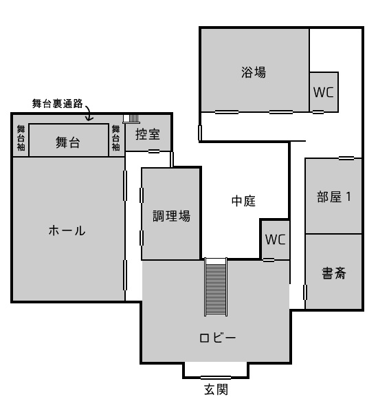

*---------------------------------------------------------------*
風が吹いた。
*---------------------------------------------------------------*
１．はじめに
このシナリオは現代日本を舞台としている。
探索中心のシナリオである。オリジナル要素を含んでいる。
・推奨プレイ人数：１～４名
・プレイ時間：音声オンセで１時間ほど。早ければ十秒ほどで終わります。
・推奨職業：特になし
・推奨技能：探索技能を中心に。
聞き込みをするなら対人技能、特に≪言いくるめ≫があると便利です。
クリアに戦闘は必要ではありませんが、戦闘技能が使えそうな場面があります。
※備考
２．概要（KP情報）
御手洗町内にある落書きを消す「アルバイト」は、参加者を自殺に追い込み、陣に魔力を溜めるという魔術的儀式だった。
そんな事実があるとも知らず、今回探索者はそのアルバイトに参加することになるのだった。
探索者がたらい回しされて、桶谷さんが儲かるシナリオです。桶谷が黒幕であることに、探索者が途中で気付くかどうかがネックとなります。
この儀式は、アルバイトに従事した者が指示の順番に落書きを消していき、最初の落書きがあった4丁目の公園周辺に戻ることで完成します。（町役場に行くときに、公園の側を通ることになります）
黒幕である桶谷の対処方法に関しては、「
桶谷の対処」を参照ください。
探索者の職業によっては、「何故バイトをしているんだ」という疑問が出るかもしれません。（警察官しかり、大学教授しかり）
そういった場合には、「明日食べるものもない金欠状態である」だとか、「知人に、どうしてもという形で代理を頼まれた」などの設定を探索者に追加してください。
設定が思いつかない場合は、シナリオの都合上、つじつまの合わないことに目をつぶって欲しいことをPLさんに伝えてください。
（落書き指示順番）
４－６－１－８－３－４
４丁目から始まり、４丁目で終わる。落書き地点を順番に結ぶと逆五芒星が描かれる。消し残った字を繋ぐと「いみなどな（い）」
隠す単語はお好みで変更可。「たらい回し」「犯人はヤス」「rBlae」などでもいいと思います。
※「rBlae」
4丁目:r,6丁目:e,1丁目:B,8丁目:l,3丁目:a（reBla）
→4丁目に辿り着いたことで、もう一度「r」（reBlar）
→1丁目から数字順に、並べ替えて「Barrel」（意味：桶）
３．主要ＮＰＣ
(キャラ付けは進行具合やお好みで適当に変更してください)
桶谷靖（おけや・やすし）
依頼人。そして黒幕。苗字は棺『桶屋』的な意味で桶谷。犯人はヤス。
STR：12 CON：9 DEX：11 SIZ：17
耐久：13 装甲なし DB：＋1D4
※備考
ダイスを一発振りしたらSIZが大きくなってしまった。
彼のステータスは人間の範囲内、戦闘の素人さんです。変更可。
４．導入
舞台は、御手洗（みたらし）町。おだんごのおいしい町です。
時刻は午前9時。探索者は、日雇いの町内清掃アルバイトを請け負うことになり、現在御手洗町四丁目にある町役場の一室に訪れています。
探索者に仕事の内容を説明してくれるのは、町役場の職員、桶谷（おけや）。外見三十代くらいの男性。
どうやら町内で、現在落書きのいたずらがされているようで、探索者の仕事はその落書きを消すというもののようです。
桶谷は探索者に、洗剤やスポンジなどの、清掃用具一式の入ったバケツと、桶谷への連絡・報告用の携帯電話を一つ渡してくれました。
（連絡・報告用の携帯電話は一つしか融通してもらえません。町役場の備品として、この携帯電話しかないのです。）
・落書きについて
ひと月ほど前から、この町の中で見かけられるようになった。このアルバイトの募集も、その時期から定期的に出している。
落書きの内容は、「○丁目の（場所名）へ行け」「○丁目にある（場所名）の（何か）を見ろ」というような指示で、その指示に従って書かれた場所に行った場合、そこでまた似たような落書きが見つかる、というようなものらしい。
自然、落書きを一つ見つければ、その指示に従っていくことで、その他の落書きも見つけて消していけるだろう。今回は、桶谷が既に町役場側にある公園の男子トイレで落書きを一つ見つけている。
・報酬について
出来高制。落書き一か所につき、一人五千円。
（探索者が複数人いたとき、探索者の一人が全ての落書きを消した場合でも、その全員が報酬を受け取ることになります。君達はチームなんだぜ！）
・アルバイトの期間について
本日午後６時まで。
・注意事項
消す前に、落書きをGPS情報付きの写真で撮って、桶谷へのメールに添付してほしい。
後日、桶谷がその場所に赴き、綺麗になっているかどうか確認の上で、探索者の仕事の出来を評価する。
一通り説明の終わったところで、桶谷は探索者に何か質問があるかを尋ねる。
特になければ、桶谷は落書きがあるという町役場近くの公園の男子トイレに探索者達を案内する。
公園の男子トイレ
奥の個室の内側の壁に落書きはある。
[落書きの内容]
6丁目の喫茶「ル・リエー」へいけ
桶谷は探索者に、落書きを消すように指示をする。
落書きを消し始めた瞬間、その場にいた探索者は突然の疲労感に襲われる。MPを1d3消費する。
また、壁の落書きを消す作業をしていた者は、追加でMPを1d3消費する。
落書きは、洗剤を付けスポンジで擦るとあっという間に消せるが、一文字だけ。「い」の文字だけ、どれだけ擦っても消すことができない。
「よし、綺麗になったな」
桶谷は、この消え残りに気付いていない様子である。（また、探索者と違い、疲労感には襲われていないようだ。）
・消え残りを指摘、桶谷に報告する
「どこにそんな文字があるんだ？」
桶谷には見えていないらしい。
・この文字が見えないのか、などと尋ねる
桶谷は「見えない」と回答する。
・↑発言に≪心理学≫成功
桶谷は嘘をついていないように感じる。
・≪心理学≫決定的成功、あるいは、KPが開示すべきだと判断した
（上記の心理学成功情報に、以下の内容を追記する）
それと同時に、見えないことに関して、何か心当たりがある様子であるように思われた。
・≪アイデア≫成功
可能性として、探索者と桶谷、どちらかに異常があることが考えられる。
探索者にしか見えないのか、桶谷が見えていないのかまでは分からない。尤も現実的な線として、桶谷が色覚異常者である可能性が思いつく。
（これについて桶谷に尋ねると、桶谷は色覚異常の可能性を否定する。）
探索者が壁の落書きを消したのを確認したところで、「後は頼んだ」と桶谷は町役場に戻っていく。
※備考
最初の場に桶谷が立ち会ったのは、それが儀式の開始条件であるため。
５．探索
事前情報
・町について
1丁目 住宅街
2丁目 図書館
3丁目 繁華街（飲食店、専門店街）
4丁目 公園・町役場
5丁目 小学校
6丁目 繁華街（飲食店・百貨店など）
7丁目 特になし。
8丁目 墓地・葬儀場
9丁目 特になし。
三丁目に近いほど賑わっていて、七丁目に近いほど閑散とした雰囲気。

↑ マップ（と呼ぶのもおこがましい何か）
http://jaxson.xxxxxxxx.jp/COC/7/map.jpg
全体共通情報
◇ 聞き込みなどで知ることができる情報
（ランダム回答取得の情報は、丁移動ごとに振り直し可能）
▼ 町内の噂
・町で怪しい人見てない？（１ｄ６でランダム回答取得）
１：「私が怪しいおじさんです」といって、目の前のおじさんは突然服を脱ぎ始めた。（今回の落書きの件に、関係はなさそうだ）
２：挙動不審な不良が、町中をうろついているのを見たことがある。
３：三丁目で、インク壷のようなものを持った人物がこそこそしているのを見たことがある。その人物の人相までは覚えていない。
４：三丁目の路地裏のあたりで、高校生くらいの男の子が三十代くらいのおじさんからお金を受け取っていた姿を見たことがある。
５：自分は見ていないが、露出狂のおじさんが出るという噂がある。（今回の落書きの件に、関係はなさそうだ）
６：見ていない。知らない。
不良は、三丁目の路地裏をたまり場にしているらしい。
・町で怪しい噂きいてない？（１ｄ６でランダム回答取得）
１：ひと月くらい前から、急に精神病んで自殺しちゃう人がいるらしいね。カラオケの一室で、集団自殺もあったらしいよ。
２：この町には七不思議があるらしい。（今回の落書きの件に、関係はなさそうだ）
３：最近この町で自殺者が多いのは、葬儀場の人が仕組んでるからだって噂がある。
４：最近、町内で露出狂のおじさんが出るという噂がある。（今回の落書きの件に、関係はなさそうだ）
５：五丁目にある変なオブジェは、宇宙人がつくったらしいという噂がある。（今回の落書きの件に、関係はなさそうだ）
６：きいていない。知らない。
・ここ最近、この町で事件なかった？
六丁目にあるカラオケの一室で、集団自殺があったらしい。自殺オフ会か何かだという話。
ひと月ほど前から、町で自殺者が出たという話をよく聞く気がする。
詳しく訊こうとする場合、NPCからは「自分も詳しく知るわけじゃない」「ネットで調べるか、最近の新聞をみた方が早い」というような回答が返る。
（自殺者の中に知り合いがいた、というかたちで1丁目の「
自殺者遺族宅」へ誘導してもいい。）
▼ 落書きについて
・落書きの場所知らない？（１ｄ６でランダム回答取得）
１：一丁目で見た気がする。どこで見たかまでは覚えていない。
２：知らない。
３：どこかで見たが、覚えていない。
４：四丁目の公園側の男子トイレにあるよな。
５：忘れた。忘れてしまった。落書きの場所も、私は一体何者なのかも…。（＞そっとしておこう）
６：六丁目の喫茶「ル・リエー」の壁にあった。
落書きを見たことのある人の中には、落書きを消そうと試みたことのある人がいる。
その時は、水で擦っても消えなかったらしい。
・落書きの指示に従って、どこまで続いているか確かめたことある？（１ｄ６でランダム回答取得）
１：ないよ。
２：ひとつ、ふたつ従ったところであきらめたよ。
３：三つほど指示に従ったところであきらめたよ。
４：友達の知り合いが「全部確かめた」って自慢していたときいたよ。
５：友達が「全部確かめた」って自慢してたよ。
６：ないよ。
☆４：の「友達の知り合い」、５：の「友達」に会う場合
≪幸運≫成功、あるいは≪言いくるめ≫か≪説得≫に成功する必要がある。
（４：の「友達の知り合い」と５：の「友達」は同一人物。名を川村朱美、女性14歳。）
▼ 川村朱美（かわむら・あけみ）14歳
気の強そうな女の子。
・落書きはどこにあった？
「忘れたわよ、そんなの」
（男子トイレに入った事実を隠したいらしく、場所については頑なに明かそうとしない。あまり問い詰めると泣く。）
・どこまで続いてた？
「私に訊かなくっても、自分で調べればいいじゃない」「成果をとられるようで嫌だわ」
・どうしても知りたい
「ヒントは、全部の落書きを見つけたと、私が気付けたという事実ね」
・≪説得≫あるいは≪言いくるめ≫成功
↓の技能ロールに補正＋１０％
・≪幸運≫半分あるいは≪信用≫に成功
指示内容が途中からループしていて、指示に従っているとたらい回しになることを教えてくれる。
「他の人には言わないでよね！」
◇ ネットで検索、図書館で調べるなどして知ることのできる情報
・ここ最近の事件について
図書館で最近の新聞にあたる、ネットで≪図書館≫に成功するなどすれば、この町でひと月ほど前から、精神を病んで自殺する人が増えたことが分かる。集団自殺も一件あった。
この町の人間であれば、調べずとも知っていていい。
・自殺者について
この町の出身の者が多い。その他の自殺者も、この町の近くの市町村の者が多いようだ。
また、自殺者らは自殺直前まで心身ともに健康的に過ごしていた者が多く、この精神を病む症状は突発的に起こったもののようだ。
・自殺直前の精神状態
詳細の記載は見つけられない。
※備考
自殺直前の精神状態に関しては、自殺者の遺族や、警察の調査データにあたることで調べられる。
◇ 警察関係者が入手できる情報（通常の情報に追加するかたちで）
・自殺者について（警察の調査データ）
一時薬物も疑われたが、自殺者から薬物は検出されず、自殺と処理・断定されたようである。
また、自殺者に共通していたこととして、町役場による日雇いの町内清掃アルバイトに参加していたことが分かる。
町役場のアルバイト関係者らの取り調べや、そのアルバイト内容について調査が行われたが、不審な点は見つからず、自殺との関連性はないとみられているらしい。
※備考
バイトをした人の全員が死んでいるわけではない。中には精神病棟で入院中の人もいる。その精神病棟のある病院は、きっと今日中に行くには難しそうな距離の場所にある。
・自殺直前の精神状態（遺族の証言聞き取りデータ）
鬱の症状と似ている。行動する気力がわかない。何事も後ろ向きに考えるようになり、自分を責め始める。
自分が生きる意味が見出せないことに苦しみ、「迷惑を掛けないために死のう」といった思考に至る。「死」が苦悩からの解放とも考えている様子である。
・町内清掃アルバイトについて
アルバイトの内容は、現在御手洗町内で見られる落書きを消すというもの。
町内に見られるすべての落書きではなく、他の落書きのある場所を指し示すメッセージである落書きだけを消すという。
・過去のアルバイト参加者のその後
自殺した、精神病院に入院した、何事もなく過ごしている等様々。人数比は自殺：入院：平気＝６：１：３ほど。
精神を病んだ者・病まなかった者の条件差異や規則性は不明。
・落書き犯の調査
落書きは、三丁目にたむろしている不良グループによるものだと考えられ、調査が進められている。
◇ その他
・アルバイト
求人要項に「地元民歓迎」の一文があった。
・落書き（全共通）
桶谷の渡した洗剤とスポンジでこすると消える。落書きを消した探索者はMPを1d3消費する。
（この洗剤でないと消えない）
・消え残った文字（全共通）
・その文字を撮っても、写真には映らない。
・探索者以外の人物には見えない。
それらのことを確かめた上で、
・≪アイデア≫成功
その文字が、探索者にしか見えない幻覚だと気付く。
【正気度ロール 0/1】
逆五芒星について、PLが気付き発言したタイミングで
・≪オカルト≫成功
逆五芒星は地の底とのつながりを意味し、悪魔を象徴する。
悪魔崇拝者のシンボルマークでもある。
◇ KP向け情報
・シナリオの進行
このシナリオを回す上で、KPには「探索者が何丁目に行くか」というかたちで探索者の行動を管理することをお勧めする。
探索者が「何をすればいいか分からない」状態にあるのならば、KPの方から、今探索者が可能な行動を提案するというかたちで進行してほしい。
各丁では、基本的に「その丁にある（施設名）に行く」「聞き込みをする」といった探索ができる。
・探索者の行動
その丁のどこに落書きがあるか知らない状態で、「落書きの場所を探す」という行動を探索者が試みようとしていた場合、次の事を伝える。
・その丁内を万遍なく探すには、丸一日かかりそうである
・落書きのある場所を知る人を聞き込み等で探す場合、二時間を消費の上、≪幸運≫四分の一で判定する
・メタな話、お勧めできない行動である
・時間の管理
KPに丸投げのお任せ。思いつかない場合、以下のうちから選ぶことをお勧めする。
・四方八方で接した丁に移動するのに30分、落書きを消すのに30分、その丁で探索するのに1時間かかる。
・導入終了後から、リアルタイムで1時間を区切りとする。
・午前中に二つ、午後に四つ、計六つまでのエリア(丁)を探索できる。
（↑この「探索」に落書き消し作業も含む・報告や情報共有のみならば「探索」には含まない・一度探索したエリアを再度探索する場合も１カウント（PLが一人の場合はカウントしない仕様にすると吉））
・別行動探索
探索者が複数おり、別行動をとる場合、KPは落書き報告用の携帯電話が一つしかないことを指摘し、誰が携帯電話を持つのかの確認をとること。
・クリティカル情報が思いつかない！
・探索が煮詰まってきたけど、そこで止まっちゃってなかなか進まない！
そんなときは、マッチとポンプを探索者のもとへ降らせましょう。
・ 1～3丁目
▼ 1丁目
住宅街。
・井戸端会議している主婦から≪聞き耳≫成功
「そこの家の息子さんが亡くなったんですって」「首吊り自殺でしょ？」「急に精神を病んじゃったんですって」「かわいそうに」との言葉が聞ける。
・奥さん、そこんところ詳しく！
亡くなったのは、神戸港造（こうべ・こうぞう）22歳、大学生。自宅の自室（密室）で首吊り自殺をした。
≪信用≫や≪言いくるめ≫などに成功することで、家の場所を教えてもらえる。
教えられなくとも、この辺りに「神戸」という表札の掛かった家は一件しかない。さがせば見つかる。
自殺者遺族宅
「神戸」の表札がかかっている。
死体発見時の状況
密室だったけど、普段から部屋に籠るときは鍵掛けるタイプだった
このところ深く沈んでいた。夕飯に呼んでも来なくて、朝に起きてこなくて、さすがにおかしいと思って扉を無理矢理開けたら首つってた。
机の上に「とうさん、かあさん、ごめん。でも、もうだめだ。俺は生きていたくない」と書かれたメモがあった。それが彼の遺書である。
警察も事件性があるとはみていない
息子の死が、あまりにも急すぎて。悲しみから立ち直れずにいる
・自殺直前の精神状態
鬱の症状と似ている。行動する気力がわかない。何事も後ろ向きに考えるようになり、自分を責め始める。
自分が生きる意味が見出せないことに苦しみ、「迷惑を掛けないために死のう」といった思考に至る。「死」が苦悩からの解放とも考えている様子である。
に落書きはある。
[落書きの内容]
8丁目墓場入口からななめ後ろの石を見ろ
「な」
▼ 2丁目
図書館がある。
図書館
郷土資料
▼ 3丁目
繁華街。飲食店が立ち並ぶ。専門店街がある。
（物資の補給や必要なものの新規購入などは、ここか6丁目で）
・和菓子屋さん
みたらし団子が売っている。ウマイ！
路地裏
不良がたむろしている。
・≪目星≫成功、あるいは、不良たちを観察する。
「何ガンくれとんじゃオラァ！」「いてこますぞコラァ」
探索者が団子を買って所持していれば、団子に熱い視線を送っている不良がいることに気付く。
団子に熱い視線を送っている不良に団子を渡せば、その不良は探索者への情報提供に積極的になります。
そのほか、暴力に訴えるなどすれば、不良たちは探索者への情報提供に協力的になるでしょう。
◇不良たちの証言
落書きは小遣い稼ぎ。頼まれた内容を書いたらおっさんが金くれる
に落書きはある。
[落書きの内容]
4丁目の公園・男子トイレの個室のなかを見ろ
「な」
探索者が４－６－１－８－３の順で落書きを消した
３の落書き地点の指示写真送ったら、電話がかかってくる（おｒメール）
・ 4～6丁目
▼ 4丁目
町役場、公園がある。
町役場
役場には、桶谷の他、職員が数名いる。
職員には、桶谷について訊くことができる。
・桶谷について
フルネームは「桶谷靖」（おけや・やすし）、あだ名はヤス。
家業の桶屋を継がずに、町役場の職員になった。悪い人ではないが、慎重さに欠けるのが難点。物事を軽く見る節がある。
・桶谷の実家の場所について
≪幸運≫成功で、その場に桶谷の実家の場所を知っている職員がいる。8丁目の葬儀場近くにある「桶屋のオケヤ」がそうらしい。
公園
・男子トイレ
奥の個室の壁に落書きがあったが、現在は消されて「い」の文字が残る。
▼ 5丁目
小学校がある。住宅街。
小学校
みたところ普通の小学校のようだ。
小学校の近くに、ぐにゃぐにゃした変なオブジェやカクカクした変なオブジェがある。現代アートというやつらしい。題名は「光と破壊の像」
「光と破壊の像」
黒くてきらきらしている。作品名と共に、二年前にできたらしいことが側のプレートに刻まれている。
・≪知識≫成功
ぐにゃぐにゃした方のかたちはよく分からないが、カクカクした方のかたちが、ねじれ双角錐・英語名称では「トラペゾヘドロン」とも呼ばれる角柱だと知っている。
・≪地質学≫成功
浮金石（うきがねいし）とも呼ばれる、黒い御影石（みかげいし）が素材のようだ。表面の光沢は磨かれた結果らしい。
・≪芸術：≫成功
芸術を知るあなたにはわかる。これがアートだ！
前衛的な作品だというのに、どこか懐かしさを覚える。それは、人の知らない、けれども確かに存在している、ひとつの真理を具現化したもののように思えた。
※備考
ただのお遊びフレーバー情報ですので、今回の事件や輝くトラペゾヘドロンとは何ら関係ありません。
ぐにゃぐにゃした変なオブジェは混沌（ニャル様）をモチーフにしているという設定です。
▼ 6丁目
繁華街。飲食店、百貨店などがある。
（物資の補給や必要なものの新規購入などは、ここか6丁目で）
に落書きはある。
[落書きの内容]
1丁目
「み」
ベンチでたそがれていた男
アルバイト経験者
途中でやめたんだけど、一緒にバイトしてた人が連絡取れなくなっちゃったんよ
・ 7～9丁目
▼ 7丁目
特になし。
▼ 8丁目
墓地、葬儀場がある。
・≪アイデア≫成功
この町に火葬場がないことに気付く。
・≪知識≫半分に成功する、あるいは、この町の出身者
この土地に、土葬の習慣があることを知っている。
墓地
お墓です。お参りしているおばあちゃんがいます。
に落書きはある。
[落書きの内容]
「ど」
葬儀場
ごく一般的な葬儀場です。
・最近この町で自殺者が多いのは、葬儀場の人が仕組んでるからだって噂があるんですけど。
葬儀場の人は「ホワァ！？ そんな事実はないよ」と、頑なに否定します。
葬儀場の近くに、「桶屋のオケヤ」という古びた看板のかかった店舗が見えます。
商品ケースには、風呂桶や手桶、たらいが並べられており、「オーダーメイド承ります」の札がかかっています。
桶屋のオケヤ
店内棺桶
奥は工房になっているようです。棺桶
棺桶は、桶屋が作ります。
桶屋は、風呂桶を作ったり、棺桶や手桶、たらい等を作ります。
ですが、現在は土葬の習慣がなく、火葬場にも入らないので、棺桶の需要はありません。
ぱぱんの桶屋には大きな借金があったけど、すぐ返せたぜ！
不謹慎な話で悪いけど、棺桶がひと月前からめっちゃ売れで借金返せたんよ
完全犯罪ですね。
▼ 9丁目
桶谷の対処
桶谷は町役場にいる。別の場所への呼び出しには、基本的に応じない。理由があれば呼び出される。
こらしめる。
桶谷にをボコす
桶谷をボコす方法には、以下のようなものがあります。
・物理的にボコす
戦闘を仕掛ける
桶谷靖（おけや・やすし）
STR：12 CON：9 DEX：11 SIZ：17
耐久：13 装甲なし DB：＋1D4
≪こぶし≫ 50%、ダメージ1d3+1d4
≪キック≫ 25%、ダメージ1d6+1d4
桶谷は暴力に訴えられると、はじめのうちは抵抗しますが、耐久の半分を切ったところで、降参を宣言します。
無視して攻撃続行可、攻撃を中断するならそこで戦闘は終了です。
痛い目を見た桶谷は、罪の重さを自覚し、これからはもうこのようなことをしないと誓います。
償い・報いといった、彼の今後の生き方に関しては、探索者の意向に添います。
・社会的にボコす
彼が不良に指示して落書きさせていたという証拠・証言があれば、それを町役場の職員に伝えることで、彼は仕事をクビになります。
町内清掃のアルバイトも、もう求人が出されることはないでしょう。
・徹底的に痛めつけてやるぜ！（拷問や調教）
えっこわい。桶谷は心が折れ、探索者の言いなりになります。
・殺す
アッハイ。耐久が０になると死にます。
このほかにも、できそうだとKPが判断するならば、その方法で解決して構いません。
桶谷は魔術を利用して人を殺していますので、殺人立証は難しく、社会的制裁を与えることはできません。
※備考
魔術を利用していることもあり、人を意図的に死なせたにも関わらず、桶谷には罪の意識が薄いです。
≪説得≫あるいは、説教することで、桶谷は罪の重さを自覚します。物理的にボコすことは、説教（物理）としてカウントされます。
６．エンディング
このシナリオのクリア条件は、
桶谷に儀式をやめさせることである。
◇ 桶谷を殺した
悪は死んだ！ さーて飲みに行こうぜ。おっと、証拠隠滅は念入りにな！
◇ 桶谷が罪の重さを自覚した
桶谷の今後については、探索者の希望があれば、それに添うかたちで処理します。
特になければ、以下の中から好きなものを選びましょう。
[案1]
桶谷は自身が自殺の原因となったことを、自殺者たちの遺族に告白する。（魔術の話はせず、「自殺を教唆した」というような言葉で、伝えることになるだろう。）
今後、桶谷と遺族らは、当事者間で納得のいく「桶谷の償い方」を模索していくことになるだろう。
[案2]
罪の重さを自覚した桶谷は、その罪悪感から自殺してしまう。
[案3]
桶谷は町役場の職員を辞め、桶屋を継いだ。落書きも見かけられなくなり、町内の景観は以前より美しくなったようである。
（多分不良たちが自主的に清掃しているとかそんなのだきっと）
そうして、御手洗町での一件は落着し、探索者は日常へと戻ります。
◇ 桶谷が罪悪感を抱いていない、開き直っている場合
探索者の目の前で、桶谷が不幸な事故に遭う。
それは、あまりに急な出来事でした。桶谷の側を通った大型トラックの積み荷が突如として崩れ、積まれていた鉄骨が運悪く桶谷の頭に直撃し、彼の頭蓋を潰したのです。誰がどう見ても、手遅れでした。
その光景を見ていた貴方は、法律で裁けない人間に、世界が裁きを与えたように感じたのでした。
もう儀式が行われる心配はありません。憂いは断たれましたね、という終わりです。
７．クリア報酬
余談
・御手洗町
トイレから始まること、御手洗は「みたらい」とも読むことからこの名前になりました。
・作ったとき
深夜テンションが２０％ほど含まれています。
あとがき
シナリオタイトルから、PLがティンとくるタイプのシナリオを作りたかったのです。
「桶」から「盥」が連想できれば、後は迷うことなんてありませんよね？
もちろん、気付かずとも探索すれば依頼の不審さは出てくると思うのですが…頼みごとを素直に達成してはいけない仕様なのは、少し不親切かもしれません。
短編ですし、思わせぶり・臭わせすぎで丁度いいのかなと思います。
ここまで目を通してくださり、ありがとうございました！
*--------------------------------------------------------------------------------*
▽2017/02/19 up
「WaKaMuRa」
http://jaxson.xxxxxxxx.jp/